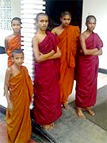
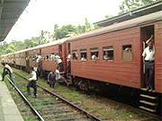

ホストファミリーと近所の人たち☆ |
この留学プログラムは、料金の安さ、以前から興味のあったスリランカという国に滞在できる事、Beインターナショナル様の柔軟かつ迅速な対応が信頼できたので参加を決めました。
全く不安や戸惑いはありませんでした。
強いて言えば『安すぎて逆に大丈夫かな？』『本当にレッスンは受けられるのかな？』と思ってしまったことです。 |
英語のレッスンは、私の場合は長期間だったので問題ありませんでしたが、もし短期間なら少し厳しい内容だったかな・・・と思います。
とある先生はひたすらテキストにそって・・・という事が毎日何時間も続けてあり、少しつらく感じた事もあります。
私はその結果、色々な英語にふれる事ができ、日本で学んだ英語に対するカチカチなルールがくずれ、実践的な英語を習得でき、こちらも満足する内容でした。宿題もバリエーションがあり、私に合ったプログラムだったと思います。
スリランカでのホームステイは、とても刺激的でした。
日本での「あたり前」がこちらでは通じず（わかってましたが）、本当に毎日が新しい事の連続。
日本にいたら気づくことのなかった事や発見、家族・親戚間のキズナの強さ、生活の流れ・・・。
スリランカが抱えている問題が一般家庭ではどんな風に考えられているのか・・・。
ホームステイだからこそ知ることのできた内容でした。
少し辛かったのは水シャワー。私は寝る前にどうしてもシャワーをあびたい人間なので、これはこたえました。
でも水シャワーという事も理解していったので、どーこーという訳ではないのですが、スリランカも夜には意外と冷えるんだなぁとびっくりしました。
ホストファミリーとの生活はとても楽しく、一生忘れる事のない充実した日々でした。どのファミリーも私を家族の一員として温かく迎えてくださり、なに不自由ない生活でした。
毎日色々な事を話し合い、今では『スリランカにも私のファミリーがいるんだ』と思える程、とても自然に生活できました。
少し戸惑ったのは一番最初のファミリーの家で、プライバシーがなかった事です。
といっても突然部屋に入ってきたり私のいない時に部屋に入ったり・・・というくらいですが、少しビックリしました。
（だからといって特にトラブルがあった訳ではありませんでした。） |
ペラヘラに参加する象が家の前を通過！ |
私は実は犬が大の苦手なんですが、犬を家の中で飼っているファミリーのステイを途中で変えてもらったんです。
スリランカは野良犬も多く、家でペットとして飼っている所も多いので、ビビってしまいました。
ステイ先を途中で変えてしまった事、２件目のファミリーにもマーネルさんにも迷惑をかけてしまい、申し訳なく思っています。
事前に申告しなかった私が悪いのですが・・・。
とにかくすみません。
|
採掘した砂利の中から宝石探し♪ |
私はレッスンの時間を利用して先生とショートトリップをしました。
宝石の町、ラトゥナプラから世界自然遺産のシンハラージャ、そしてスリランカ最南端の町マータラを経由して世にも珍しいストルトフィッシングを見学、体験しゴールへ向かいました。
|
ラトゥナプラでは写真のような大きな穴を掘って人力で掘った砂利をひたすら洗い宝石の原石を探すという気の遠くなる作業をしている現場を見学しました。
いつ出るかわからない原石を、一攫千金を夢見て朝から一日中家族ぐるみで作業していました。
|
ラトゥナプラの宝石採掘現場 |
|
世界自然遺産シンハラージャ |
シンハラージャではスリランカにしか生息しないという鳥たちや植物をたくさん見ることができ、森からたくさんのきれいな空気を吸い、リフレッシュできました。
でもうっかり立ち止まると、ヒルの攻撃に遭うので常に動き続けなければならなく数日間の筋肉痛に見舞われました。
マータラで見たインド洋の美しさは忘れがたく、どの町・村もとても素晴らしくてその土地ならではの生活を見ることができました。
|
今度スリランカへ行くときは、スリランカ人が皆口をそろえて美しいと言うトリンコマリーの海、そして野生動物が生息するヤーラ国立公園を訪れてみたいです。
現在はLTTEの支配下にある地域とトリンコマリー、ヤーラは近く、残念ながら私が滞在した時期には行くことができませんでした。
少しでも早くスリランカに平和が訪れる日が来るよう、祈るばかりです。
|
ヴェリガマのストルトフィッシャーマン |
ストルトフィッシングに私も挑戦！ |
意外とスリランカのスーパーは欧米化していてオドロキました。
逢坂さんは向こうで何でも手に入ると教えてくれていたのにイマイチ信用できず（←スミマセン）、シャンプーやボディソープなど重たいものをたくさんもっていって後悔しました。
ホントに意外と何でも手に入るのでこれ持って行けば良かったなーってのはないです。
唯一あえて言えば小さい懐中電灯があったら便利かもです。
しかしファミリーによっては用意してあったのですが、ほとんどの家が停電になったらローソクだったので。
停電の多さにはまいりました。
ヒンドゥー教のお祭りの儀式 |
ヒンドゥー村の子供たち |
低開発村視察は、向かう途中の道からしてオドロキでした。
マンガでも出てこない様なガタゴト道にはビックリでした。
私が視察に行った時は大雨が数日間降り続いた後に行った為、畑の農作物は壊滅的で村の皆さんの落胆を見るのは初めて会った私も胸のはりさける思いでした。
それでも前向きに畑を耕す姿には心を打たれ、そんな状況でもホスピタリティー溢れるおもてなしをしていただき、何とも言えない気持ちでした。
マーネルさんたちもいろいろ詳しく説明してくれ、なじみのある野菜（アボカドなど）やブラックペッパーがなっている木など見せていただき、これまたオドロキの連続でした。
スリランカという国をひとことで言うと『温かい国』です。
どんな時でも周りの人にやさしく、家族間の愛情も深く、ブッダを崇拝し、人情に熱い！
その裏でスリランカが抱えている問題（LTTEなど）が悲しくうつりました。
それぞれの人種が互いに意見を主張し合っていることが内戦という形になったこと、日本も決して他人事ではないと感じます。 |
 近所のお寺のお坊さんたち
|
 スリランカの電車を駅で見学 |
あとは『発展途上国という国がなぜ途上中なのか・・・。』という単純な私の疑問もとけました。
『なんでこんなカンタンな事ができないんだろう？』と色々な面で感じたり・・・日本では小学生でも考えつきそうな事もスリランカでは大人が考えつかないなど。
マーネルさんいわく『学習、知識がないからだ』という。
日本のように便利になってほしいと思う反面、このままのスリランカでいてほしいと思う事・・・でも将来の子供たちに未来がないからとスリランカを出、アメリカやオーストラリアに出て行くスリランカ人が多いという事実もなんだか少し悲しく感じました。 |
逢坂さん、ならびにマーネルさんの対応はとても素晴らしく、個々に合わせた対応をしていただく事ができ、とても満足です。こんなに料金が安いのに、なんだか申し訳ないほどです。
そして、このような素敵なプログラムを提供していただき感謝の気持ちでいっぱいです。
私はスリランカで、絶対変わらないであろう私のマインドが１８０度変わりました（良い方に）。
スリランカへは、是非、また必ず行きたいです。
本当にスリランカが大好きになりました。
それはもちろんスリランカという国が素敵だからということだけでなく、逢坂さん、マーネルさんのサポートがあってだと強く感じます。
行く時は必ずまたこのプログラムを利用したいです。
よろしくお願いします。
本当にありがとうございました。」
|